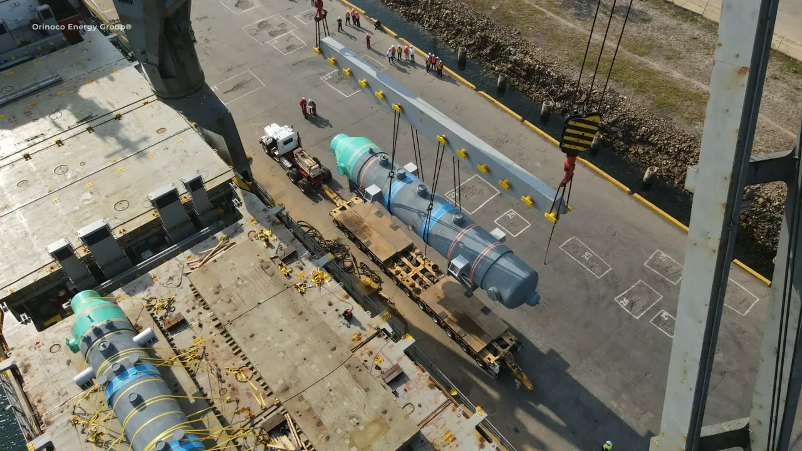
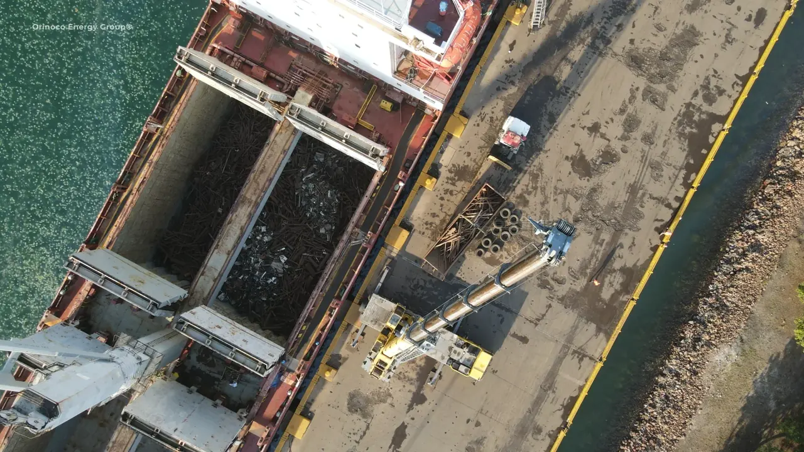
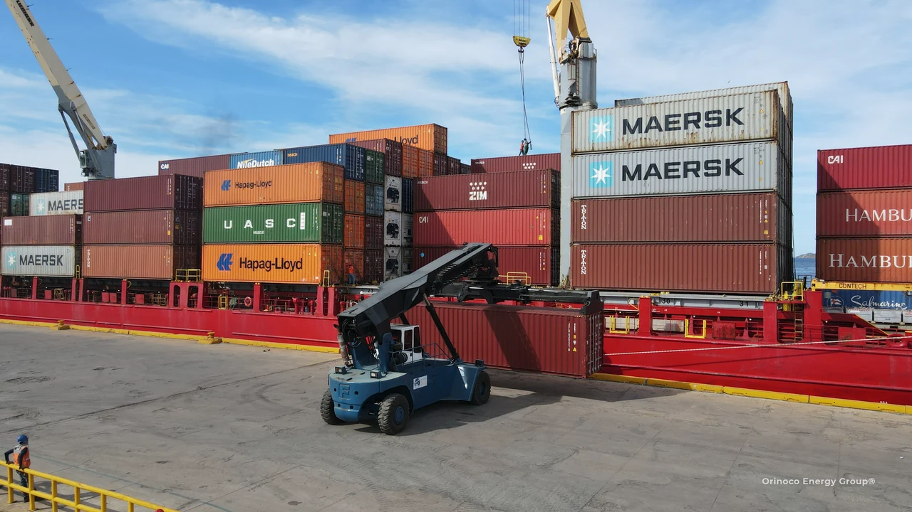
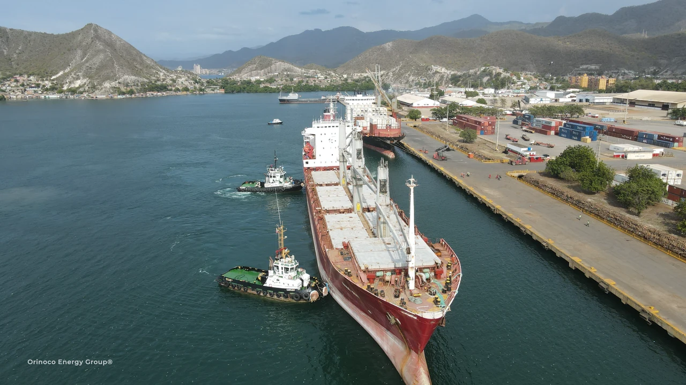
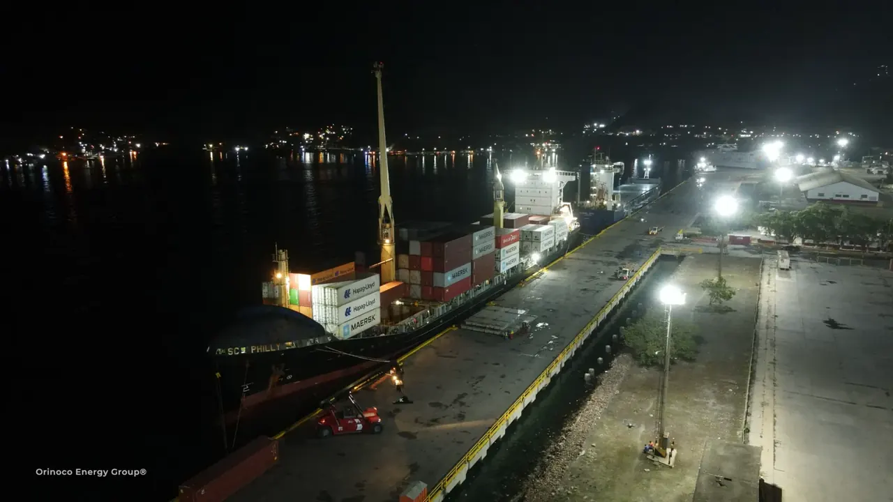

Field operations
REAL CARGO.
CONNECTED OPERATIONS.
Industrial equipment, export cargo and vessel activity—connected by planning, local handling and the right coordination at every handoff.
01 / Industrial project cargo
FROM THE LIFT
TO THE LAST MILE.
Industrial equipment and specialized machinery require a sequence: shipment planning, the right handling arrangements, the right transport and a clear handoff at destination.
OEG coordinates that sequence through its companies and operating allies, with local operators matched to the port and project.
Explore project cargo capability
02 / Export handling
OUTBOUND CARGO.
AN INTEGRATED PLAN.
Scrap, metals, bulk and general cargo need a shipment plan that connects the supplier, origin movements, local cargo handling and international transport.
Explore export operations
03 / Containers & maritime activity
VESSEL. QUAY.
ONWARD CONNECTION.
From container handling to vessel manoeuvres, field activity sits within a wider coordination chain.



Across the operating sequence
Different cargo.
Connected expertise.
Cargo preparation, port handling and vessel coordination support the onward delivery plan.
Your next project
LET’S MOVE
IT FORWARD.
Tell us what needs to move, where it starts and where it needs to go.
Discuss your project